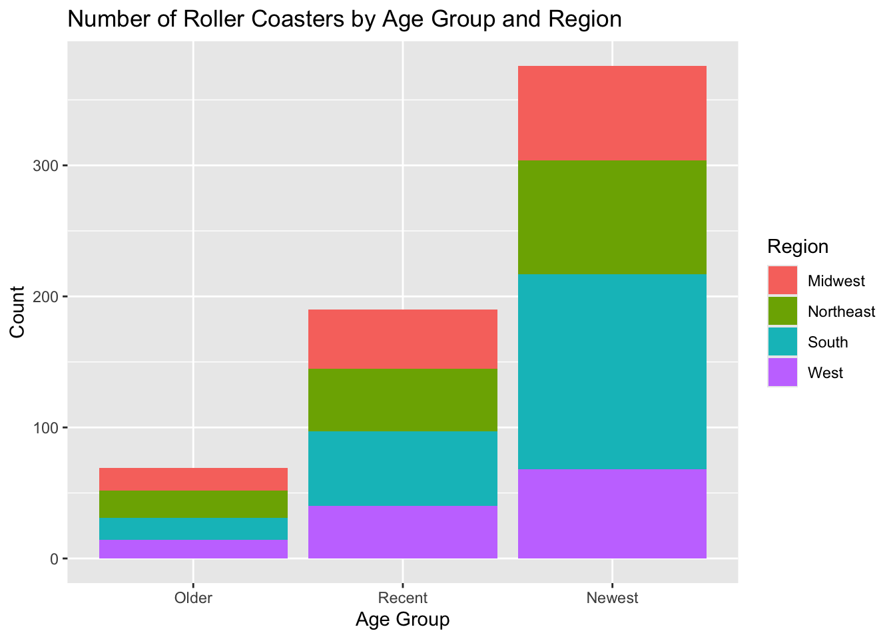

Write a function that allows the user to query the API with the following character string inputs: title/subject search, time period, API key: **Inputs must be character strings with %20 instead of spaces!*
queryNewsAPI <-function(title_or_subject, date_to_search_from, API_key, ...) {if(!is.character(title_or_subject) |!is.character(date_to_search_from) |!is.character(API_key)){stop('Title or subject, date to search from, and API key must be character strings.') } queryInfo <-GET(paste('https://newsapi.org/v2/everything?q=', title_or_subject, '&from=', date_to_search_from, '&language=en&apiKey=', API_key, sep ='')) queryParse <-fromJSON(rawToChar(queryInfo$content)) articleInfo <-as_tibble(queryParse$articles)return(articleInfo)}
Didn’t work - delete before submitting
queryNewsAPI <-function(title_or_subject, date_to_search_from, API_key, ...) { result <-tryCatch({if (!is.character(title_or_subject) |!is.character(date_to_search_from) |!is.character(API_key)){stop('Title or subject, date to search from, and API key must be character strings.') } queryInfo <-GET(paste('https://newsapi.org/v2/everything?q=', title_or_subject, '&from=', date_to_search_from, '&language=en&apiKey=', API_key, sep ='')) queryParse <-fromJSON(rawToChar(queryInfo$content)) articleInfo <-as_tibble(queryParse$articles) }, error =function(e) {message("Error: ", e$message)NA# Returning NA in case of an error })return(result)}
Rows: 635 Columns: 21
── Column specification ────────────────────────────────────────────────────────
Delimiter: ","
chr (12): Coaster, Park, City, State, Census Region, AgeGroup, Scale, Type, ...
dbl (9): Year Opened, TopSpeed, MaxHeight, Drop, Length, Duration, # of Inv...
ℹ Use `spec()` to retrieve the full column specification for this data.
ℹ Specify the column types or set `show_col_types = FALSE` to quiet this message.
Review basic details and statistics (if relevant) for each variable:
summary(rc)
coaster park city state
Length :635 Length :635 Length :635 Length :635
N.unique :482 N.unique :197 N.unique :171 N.unique : 40
N.blank : 0 N.blank : 0 N.blank : 0 N.blank : 0
Min.nchar: 2 Min.nchar: 6 Min.nchar: 3 Min.nchar: 4
Max.nchar: 46 Max.nchar: 47 Max.nchar: 20 Max.nchar: 14
censusRegion yearOpened ageGroup topSpeed
Length :635 Min. :1920 Length :635 Min. : 6.00
N.unique : 4 1st Qu.:1995 N.unique : 3 1st Qu.: 28.50
N.blank : 0 Median :2002 N.blank : 0 Median : 45.00
Min.nchar: 4 Mean :1999 Min.nchar: 7 Mean : 42.24
Max.nchar: 9 3rd Qu.:2013 Max.nchar: 8 3rd Qu.: 55.00
Max. :2020 Max. :128.00
NAs :74
maxHeight scale type design
Min. : 5.0 Length :635 Length :635 Length :635
1st Qu.: 28.0 N.unique : 4 N.unique : 2 N.unique : 7
Median : 64.3 N.blank : 0 N.blank : 0 N.blank : 0
Mean : 76.8 Min.nchar: 6 Min.nchar: 4 Min.nchar: 4
3rd Qu.:109.0 Max.nchar: 7 Max.nchar: 5 Max.nchar: 9
Max. :456.0
NAs :8
drop length duration inversions numberInversions
Min. : 0.00 Min. : 48 Min. : 20 Length :635 Min. :0.0000
1st Qu.: 25.00 1st Qu.: 900 1st Qu.: 70 N.unique : 2 1st Qu.:0.0000
Median : 70.00 Median :1490 Median :101 N.blank : 0 Median :0.0000
Mean : 77.18 Mean :1938 Mean :106 Min.nchar: 2 Mean :0.9213
3rd Qu.:108.50 3rd Qu.:2800 3rd Qu.:130 Max.nchar: 3 3rd Qu.:1.0000
Max. :418.00 Max. :7359 Max. :540 Max. :8.0000
NAs :128 NAs :33 NAs :66
make latitude longitude boundary
Length :635 Min. :26.55 Min. :-122.94 Length : 635
N.unique : 53 1st Qu.:34.47 1st Qu.: -97.15 N.unique : 41
N.blank : 0 Median :38.51 Median : -84.31 N.blank : 0
Min.nchar: 4 Mean :37.69 Mean : -89.46 Min.nchar: 6568
Max.nchar: 36 3rd Qu.:40.97 3rd Qu.: -77.46 Max.nchar:32759
NAs : 36 Max. :47.92 Max. : -70.39
censusRegionF ageGroupF scaleF typeF designF
Midwest :134 Older : 69 Extreme:269 Steel:530 Bobsled : 4
Northeast:156 Recent:190 Thrill :160 Wood :105 Flying : 9
South :223 Newest:376 Family :178 Inverted : 42
West :122 NAs : 28 Sit Down :560
Stand Up : 4
Suspended: 7
Wing : 9
inversionsF
Yes:170
No :465
View just number of missing values per variable:
colSums(is.na(rc))
coaster park city state
0 0 0 0
censusRegion yearOpened ageGroup topSpeed
0 0 0 74
maxHeight scale type design
8 0 0 0
drop length duration inversions
128 33 66 0
numberInversions make latitude longitude
0 36 0 0
boundary censusRegionF ageGroupF scaleF
0 0 0 28
typeF designF inversionsF
0 0 0
Create contingency tables (one-way, two-way, three-way) for the factor variables:
table(rc$censusRegionF)
Midwest Northeast South West
134 156 223 122
This contingency table is a one-way table showing how many observations (roller coasters) are in each region. For example, the West region has 122 roller coasters.
This second contingency table is a two-way table showing how many observations with a given type fall into each age group. For example, there are 35 wood roller coasters in the recent age group.
, , = Yes
Extreme Thrill Family <NA>
Bobsled 0 0 0 0
Flying 9 0 0 0
Inverted 32 0 0 0
Sit Down 122 0 0 0
Stand Up 4 0 0 0
Suspended 0 0 0 0
Wing 3 0 0 0
<NA> 0 0 0 0
, , = No
Extreme Thrill Family <NA>
Bobsled 0 4 0 0
Flying 0 0 0 0
Inverted 4 0 6 0
Sit Down 89 153 168 28
Stand Up 0 0 0 0
Suspended 0 3 4 0
Wing 6 0 0 0
<NA> 0 0 0 0
, , = NA
Extreme Thrill Family <NA>
Bobsled 0 0 0 0
Flying 0 0 0 0
Inverted 0 0 0 0
Sit Down 0 0 0 0
Stand Up 0 0 0 0
Suspended 0 0 0 0
Wing 0 0 0 0
<NA> 0 0 0 0
This contingency table is a three-way table (specifically a 3D array) showing how many roller coasters with or without inversions were a given design and scale. For example, there were 9 roller coasters with inversions, a flying design type and extreme scale.
Create a conditional two-way table using the table() function by: 1) Subsetting the data, then creating the table
`summarise()` has regrouped the output.
ℹ Summaries were computed grouped by censusRegionF and designF.
ℹ Output is grouped by censusRegionF.
ℹ Use `summarise(.groups = "drop_last")` to silence this message.
ℹ Use `summarise(.by = c(censusRegionF, designF))` for per-operation grouping
(`?dplyr::dplyr_by`) instead.
# A tibble: 7 × 5
designF Midwest Northeast South West
<fct> <int> <int> <int> <int>
1 Flying 1 3 4 1
2 Inverted 11 9 14 8
3 Sit Down 117 139 194 110
4 Suspended 2 NA 4 1
5 Wing 3 2 3 1
6 Bobsled NA 2 2 NA
7 Stand Up NA 1 2 1
Create a stacked bar graph and a side-by-side bar graph:
stackAgeRegion <-ggplot(rc, aes(x = ageGroupF, fill = censusRegionF)) +geom_bar(position ='stack') +labs(x ='Age Group', y ='Count', fill ='Region', title ='Number of Roller Coasters by Age Group and Region')stackAgeRegion

sideAgeRegion <-ggplot(rc, aes(x = ageGroupF, fill = censusRegionF)) +geom_bar(position ='dodge') +labs(x ='Age Group', y ='Count', fill ='Region', title ='Number of Roller Coasters by Age Group and Region')sideAgeRegion